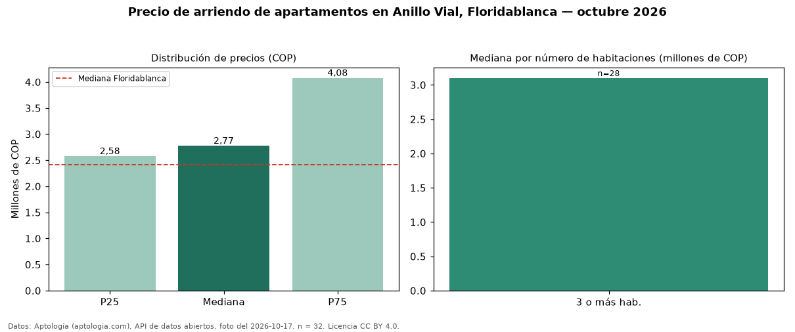

Precio de arriendo de apartamentos en Anillo Vial, Floridablanca — octubre 2026
En Anillo Vial, Floridablanca, la mediana de canon mensual de apartamentos es COP 2.775.000, según 32 avisos vigentes. Frente al total de Floridablanca (COP 2.420.000), el barrio está 15 % por encima. Con la mediana de venta del mismo barrio (COP 465 millones), el arriendo anual equivale a 7,2 % del precio de venta: una aproximación gruesa a la rentabilidad bruta, porque compara medianas de ofertas distintas. El segmento con más oferta es el de 3 o más habitaciones (28 avisos, mediana COP 3.100.000). 97 % de los avisos incluye parqueadero. La mitad central de los avisos va de COP 2.575.000 a COP 4.075.000 (razón 1,6), una dispersión moderada. El aviso más barato pide COP 1.900.000 y el más caro COP 5.000.000. Datos: Aptología (aptologia.com), API de datos abiertos, licencia CC BY 4.0 — https://www.aptologia.com/arriendo/floridablanca/anillo-vial. Archivos: PDF de 2 páginas, CSV con las cifras y gráfica PNG.

| Avisos únicos | 32 |
|---|---|
| Percentil 25 | COP 2.575.000 |
| Mediana | COP 2.775.000 |
| Percentil 75 | COP 4.075.000 |
Fuente: avisos vigentes de portales inmobiliarios recopilados por Aptología, deduplicados (mínimo 30 avisos únicos por celda). Precios pedidos, no cerrados. Fecha: 2026-10-18.